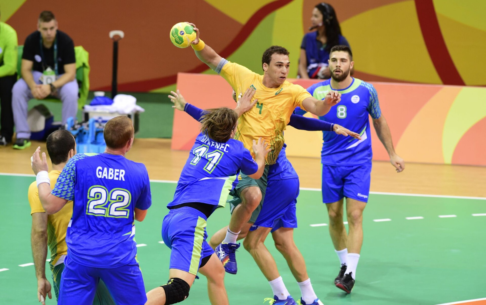
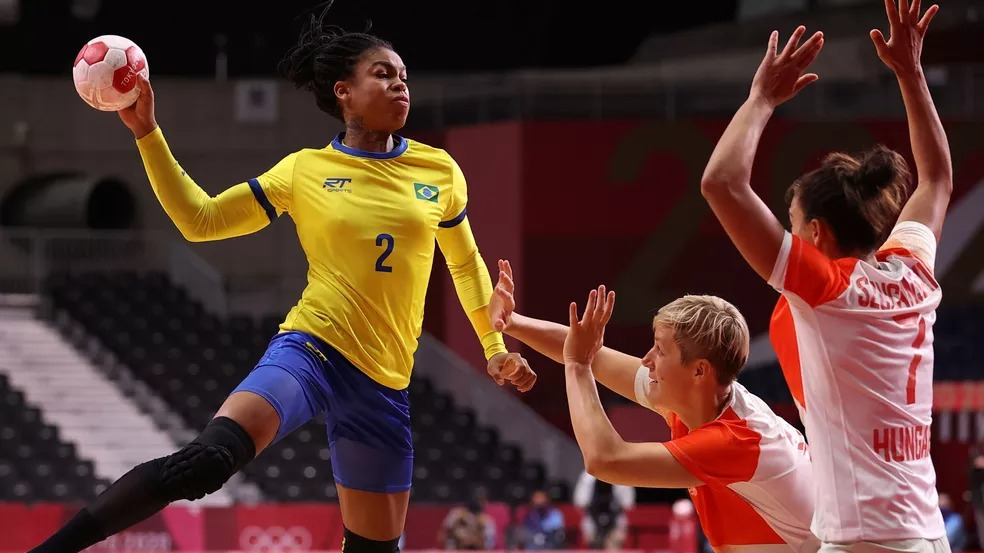

Handebol
Origem
O handebol moderno foi criado pelo professor de educação física alemão Karl Schelenz em 1917, na Alemanha. Schelenz desenvolveu o handebol como uma alternativa indoor para o futebol, buscando uma prática esportiva que pudesse ser jogada em espaços cobertos durante o inverno.
Jogo e suas regras

- Número de jogadores: Cada time é composto por 7 jogadores em campo, incluindo um goleiro.
- Objetivo: O objetivo do jogo é marcar gols, colocando a bola na baliza (gol) do time adversário.
- Duração do jogo: Uma partida de handebol é composta por dois tempos de 30 minutos cada, com um intervalo de 10 minutos.
- Início do jogo: O jogo começa com um lançamento ("saída") no centro da quadra, feito por um jogador da equipe que venceu o sorteio.
- Toque de bola: Os jogadores podem tocar na bola com qualquer parte do corpo acima do joelho, exceto com os braços e as mãos (a menos que sejam o goleiro dentro de sua própria área).
- Faltas: São cometidas faltas quando um jogador comete uma infração, como empurrar, puxar, segurar, entre outros.
- Cartões: Os árbitros podem aplicar cartões amarelos ou vermelhos para punir jogadores por infrações graves. Um cartão amarelo é uma advertência, enquanto um cartão vermelho resulta em exclusão temporária (2 minutos) ou expulsão (desde que seja a terceira exclusão) do jogador do campo.
- Arremesso lateral: Quando a bola sai pelas linhas laterais do campo, é feito um arremesso lateral para recolocá-la em jogo.
- Tiro de meta: Quando a bola sai pelas linhas de gol, é feito um tiro de meta, que é cobrado pelo goleiro da equipe defensora.
- Tiro de sete metros: É concedido um tiro de sete metros à equipe atacante quando um jogador de defesa comete uma falta dentro da área do goleiro.
- Escanteio: Quando a bola sai pelas linhas de fundo após ter sido tocada por um jogador da equipe defensora, é concedido um escanteio para a equipe atacante.
Curiosidades
- O handebol é o segundo esporte de quadra mais popular do mundo, atrás apenas do futebol, e é amplamente praticado em muitos países ao redor do globo.
- O handebol de praia é uma variante do esporte que é jogada na areia, assim como o vôlei de praia, e ganhou popularidade em competições internacionais nos últimos anos.
- O handebol é conhecido por sua velocidade e dinamismo, com passes rápidos, movimentos ágeis e muita ação durante o jogo.
- A posição do goleiro no handebol é única, sendo o único jogador que pode tocar a bola com qualquer parte do corpo dentro da área do gol, incluindo as mãos e os pés.
- O handebol é um esporte que promove a interação social, a coordenação motora, a tomada de decisões rápidas e o trabalho em equipe, tornando-o uma escolha popular para competições escolares e comunitárias.